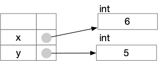
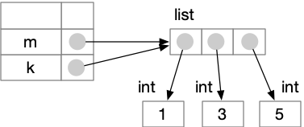
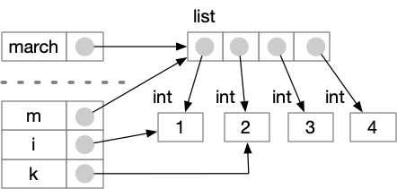
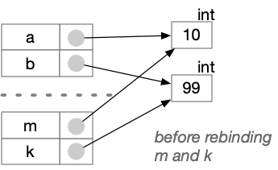
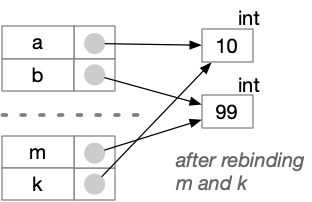

Aliasing#
Binding can create aliases#
In an earlier chapter we briefly touched on the notion of binding a
variable name to a value. A namespace in Python is an association
of names with references to objects. The values of variables are
actually in the objects. When we assign a value to a variable, e.g.,
x = 5, we are actually creating an association between the name
x and an object that contains the value 5.
x = 5

When we assign the value of x to variable y by writing y = x, we
make a copy of
the reference, not a new copy of the object containing the value.
y = x

If we bind a new value to x, for example by writing x = x + 1, it
will be bound to a reference to
an object containing that new value.
x = 6

Aliasing mutable values#
When x and y referred to the same object containing 5, we say
they were aliased. Does aliasing matter? For int values, it
almost never matters. When we
assigned a new value to x, we did not change the value in the
int object. We created a new int object to contain the new
value. We say that type int is immutable, because we never
change (mutate) the values in objects. For immutable types, it
almost doesn’t matter that variables are bound to references that
could be aliases.
Aliasing becomes important when we consider mutable types. For
example, type list is mutable: We can actually change the value
in a list object. Consider:
m = [1, 3, 5]
Now m contains a reference to a list containing int objects,
which contain values 1, 3, and 5.

Now suppose we change the value of m[1], the second element in the
list.
m[1] = 7
This will actually modify the list object, without changing
the binding of m to that list object.
![assignment to m[1] modifies the list](../_images/binding-aliasing-m-after.png)
Consider what happens if another variable k refers to the same
list, becoming an alias of m:
m = [1, 3, 5]
k = m

Now if we modify of an element of m…
m[1] = 7
print(k)
[1, 7, 5]
… we have also modified the value of any alias of m.

Sometimes this is just what we want. If we mutate an aliased variable accidentally, though, it can lead to confusing bugs. We need to distinguish between references to equal values and references to the same object. Test your understanding by explaining the values printed by the following code:
m = [17, 25]
n = [17, 25]
k = m
m[1] = 1
print(f"m = {m}")
print(f"n = {n}")
print(f"k = {k}")
m = [17, 1]
n = [17, 25]
k = [17, 1]
Aliasing for functions that mutate values#
Sometimes we use aliasing to write functions that modify the values passed to them. Consider, for example, a function that swaps two elements of a list.
def swap_elements(m: list, i: int, k: int):
"""Swap m[i] with m[k]."""
tmp = m[i]
m[i] = m[k]
m[k] = tmp
march = [1, 2, 3, 4]
swap_elements(march, 1, 2)
print(march)
[1, 3, 2, 4]
Function swap_elements does not return a value (to be precise,
it always returns the value None). Instead of a
useful return value,
it has an effect. Aliasing of the formal argument m to the
actual argument example_list allows function swap_elements to
have an effect on the actual argument.

A function can have an effect on actual arguments only if those
argument values are mutable. We can write a function to exchange
elements of a list because type list is mutable. It is not
possible in Python to write a function that exchanges
the values of two int
values, because the Python int type is immutable. Consider:
# The following swap function DOES NOT WORK
def swap(m: int, k: int):
"""Exchange values of m and k
(BROKEN AND UNFIXABLE)
"""
tmp = m
m = k
k = m
a = 10
b = 99
print(f"Before swap, a={a}, b={b}")
swap(a, b)
print(f"After swap, a={a}, b={b}")
Before swap, a=10, b=99
After swap, a=10, b=99
When swap is called, m and k become aliases of a and b.

However, changing m and k just changes the bindings of those
variables within the function. It does not alter the values that
a and b refer to. The values of a and
b are unchanged.
